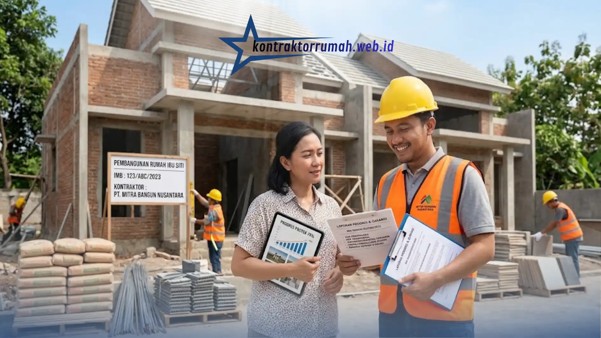

Sudah transfer DP, eh tukangnya malah menghilang tanpa kabar. Cerita seperti ini bukan hal asing di dunia konstruksi rumah, dan jadi mimpi buruk bagi siapa pun yang sedang membangun hunian impian.
Membangun atau merenovasi rumah itu ibarat investasi seumur hidup, sayangnya prosesnya sering bikin pusing tujuh keliling, mulai dari drama tukang yang tiba-tiba menghilang sampai material yang entah kenapa cepat habis. Kalau kamu tidak punya banyak waktu luang untuk mengawasi proyek setiap hari, di sinilah jasa kontraktor rumah yang profesional sangat dibutuhkan. Tapi memilih kontraktor juga tidak boleh asal tunjuk, salah pilih proyek bisa mangkrak dan uangmu melayang. Berikut panduan lengkap kriteria yang wajib kamu cek sebelum memutuskan.
Poin Penting
- Kontraktor terpercaya punya portofolio yang bisa diverifikasi dan transparan soal RAB & spesifikasi material.
- Curigai penawaran harga yang selisihnya lebih dari 20-30% di bawah rata-rata pasar.
- SPK wajib ada sebelum proyek dimulai, memuat jadwal, spesifikasi, termin, denda, dan prosedur change order.
- Garansi retensi 3-6 bulan pasca serah terima jadi bukti kontraktor yakin dengan kualitas kerjanya.
- Pastikan kontraktor punya badan usaha resmi (CV atau PT) dan bisa menerbitkan invoice resmi.
Cek Portofolio dan Rekam Jejaknya
Kontraktor yang kredibel pasti bangga memamerkan hasil kerja mereka. Mintalah portofolio proyek-proyek sebelumnya, atau cek langsung akun media sosial dan website mereka. Perhatikan juga beberapa hal berikut.
- Apakah portofolionya bervariasi (rumah tinggal, ruko, renovasi) atau hanya satu jenis proyek saja.
- Apakah ada testimoni atau ulasan dari klien sebelumnya yang bisa diverifikasi.
- Berapa lama kontraktor tersebut sudah beroperasi.
Lebih bagus lagi kalau kamu bisa bertanya langsung kepada klien lama tentang kepuasan hasil kerja dan ketepatan waktu pengerjaannya.
Berani Transparan soal RAB dan Material
Ini kunci agar kamu tidak merasa ditipu. Kontraktor yang baik akan menyusun RAB secara rinci, jujur, dan masuk akal, lengkap dengan jenis material yang dipakai, spesifikasi (misalnya merek dan tipe keramik, jenis kayu untuk kusen, dan sebagainya), hingga harganya.
Jangan mudah tergiur tawaran harga terlalu murah di bawah standar pasar, karena biasanya kualitas materiallah yang dikorbankan. Sebagai gambaran, kalau ada penawaran yang harganya jauh di bawah rata-rata kontraktor lain (selisih lebih dari 20-30%), sebaiknya kamu curiga dan tanyakan detail spesifikasi materialnya satu per satu.
Memiliki Surat Perjanjian Kerja (SPK) yang Jelas
Jangan pernah memulai proyek hanya bermodalkan "saling percaya". Kontraktor profesional pasti menyodorkan SPK sebelum mulai bekerja, yang di dalamnya tertulis jelas hal-hal berikut.
- Waktu mulai dan target selesai proyek.
- Spesifikasi material yang disepakati (merek, tipe, jumlah).
- Sistem termin pembayaran (biasanya dibagi 3-5 tahap sesuai progres).
- Denda jika proyek terlambat dari jadwal.
- Prosedur jika terjadi perubahan desain di tengah jalan (biasanya disebut change order).
Baca SPK dengan teliti sebelum menandatangani, dan jangan sungkan bertanya jika ada klausul yang kurang jelas.
Memberikan Masa Garansi Retensi
Bagaimana kalau sebulan setelah rumah selesai, tiba-tiba atapnya bocor? Jasa kontraktor rumah yang bertanggung jawab selalu memberikan garansi pemeliharaan (retensi), biasanya 3-6 bulan setelah serah terima kunci. Ini bukti mereka yakin dengan kualitas kerjanya sendiri.
Beberapa hal yang perlu dipastikan soal garansi:
- Apa saja yang tercakup dalam garansi (struktur, kebocoran, keramik lepas, dll).
- Berapa lama masa garansi berlaku.
- Bagaimana prosedur klaim jika terjadi kerusakan.
Legalitas dan Badan Usaha yang Jelas
Kontraktor yang serius biasanya memiliki badan usaha resmi (CV atau PT), NPWP, dan bisa menerbitkan invoice atau kuitansi resmi. Ini penting bukan hanya untuk keperluan administrasi, tapi juga sebagai bukti hukum jika suatu saat terjadi sengketa.
Sistem Komunikasi dan Pelaporan Progres
Kontraktor yang baik biasanya memberikan laporan progres secara berkala, bisa mingguan atau setiap tahap selesai, lengkap dengan foto dokumentasi. Ini memudahkan kamu memantau perkembangan proyek meski tidak bisa datang ke lokasi setiap hari.

Laporan progres berkala lengkap dengan foto dokumentasi memudahkan pemilik rumah memantau proyek tanpa harus datang ke lokasi setiap hari.
Catatan dari tim Kontraktor Rumah: Kontraktor Rumah beroperasi sebagai mitra konstruksi berbadan hukum PT resmi, menyusun RAB dan SPK secara transparan sejak awal proyek, serta memberikan laporan progres berkala dan garansi retensi untuk menjaga kepercayaan setiap klien.
FAQ Seputar Jasa Kontraktor Rumah Terpercaya
Memilih jasa kontraktor rumah bukan keputusan yang boleh diambil terburu-buru. Dengan mengecek portofolio, memastikan transparansi RAB, memiliki SPK yang jelas, garansi retensi, legalitas usaha, hingga sistem pelaporan progres, kamu bisa membangun atau merenovasi rumah dengan tenang tanpa was-was proyek mangkrak di tengah jalan.